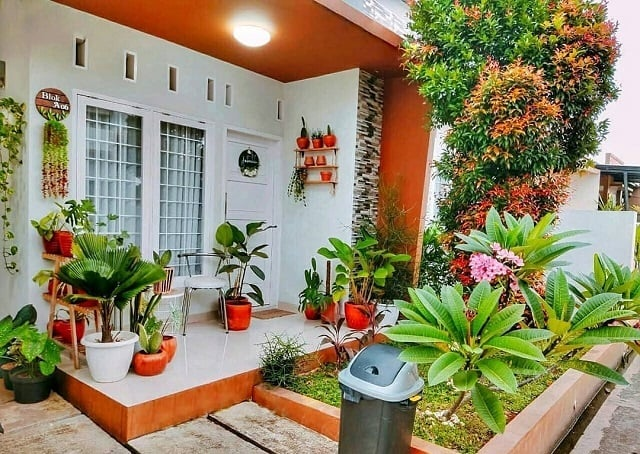

Genangan air dan banjir adalah suatu permasalahan yang terjadi
ketika memasuki musim penghujan. Terkadang hal tersebut membuat
kita sebagai pemilik rumah menjadi resah. Untuk itu kami
memberikan beberapa cara agar dapat meminimalisir terjadinya
genangan air dan banjir yang terjadi di sekitar area rumah anda.
Seperti memanfaatkan lahan sempit maupun luas di teras.
Hal ini dapat dijadikan space green di area rumah untuk kita
maksimalkan dengan menanam pepohonan. Selain itu, sirkulasi udara
menjadi sangat baik di rumah anda.
Cara mengatasi banjir dengan memperbanyak pohon mungkin
kedengarannya klasik, padahal dapat dilakukan dengan cara yang
lebih sederhana. Adanya pepohonan maupun tanaman lainnya mampu
mencegah banjir karena memiliki akar yang mampu menyerap air
dengan baik. Sebaliknya jika tak ada tumbuh-tumbuhan atau vegetasi
apapun di atas tanah, penyerapan jadi kurang baik dan berakibat
air susah tertampung karena tidak adanya akar yang menahan laju
air.
Membuat sebuah taman kecil yang berisi berbagai macam tanaman,
tujuannya tak hanya menghindari banjir, tetapi juga menambah
estetika pada lingkungan sekitar rumah. Contoh pohon yang dapat
ditanam dan mampu memberikan banyak manfaat, misalnya mangga,
jambu, cempedak, akar wangi, dan lain sebagainya.
Membuat Taman di Rumah
